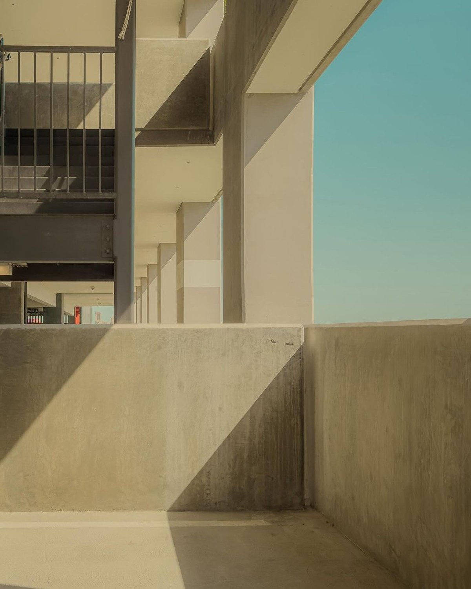

Las mismas reglas en todas: mayúsculas ligeras, tracking amplio, el guion café a media altura. Lo que cambia es la voz de la letra — de la geometría pura al toque boutique. Al final, tres tratamientos del guion para rematar la elegida.
La que ya te gustó. Geometría amable, círculos perfectos en la O, moderna sin frialdad. Su ventaja definitiva: es la misma familia que usará todo el sistema — un solo idioma de la marca al botón.
Heredera directa de Futura — la tipografía de la Bauhaus que definió el lujo geométrico. Trazos casi monoline, la K abierta, la S esbelta: es la voz más cercana a tu referencia ORLA sin dibujar nada a mano. Fría en el mejor sentido: arquitectónica.
La clásica del lujo urbano — nacida de los rótulos del barrio Montserrat de Buenos Aires. Más ancha y estable que Poppins, con una R de pierna firme. Transmite institución: un despacho que lleva años cerrando bien.
El toque década del 20 — geometría con espíritu art déco: la E de brazos largos, la S estilizada, cintura alta. Es la más «hotel boutique» de las seis. Si Klo-Ser quisiera oler a lobby con mármol y latón, es esta.
La elegante editorial — nació como display ultrafina y se le nota: contraste sutil en los trazos, la K con patada refinada. Menos geométrica, más caligráfica en espíritu (sin serlo). La favorita si el high-ticket tira hacia moda y no hacia obra.
La minimalista radical — un solo peso, círculos perfectos, cero adornos. Es la más silenciosa de las seis: no opina, solo afirma. Al no tener versión thin, pesa un poco más que las demás — mejor para tamaños chicos y bordados.

02 Jost 200 si quieres clavar la referencia ORLA — es Futura de espíritu, arquitectónica pura, y en el guion le pondría el remate A (media altura) para el uso diario con B (línea larga) reservado para papelería y gran formato. 01 Poppins 200 sigue siendo la jugada más coherente (una sola familia en todo el sistema) — la diferencia con Jost es sutil y solo se aprecia en grande. Las demás son voces válidas con otro carácter: Montserrat institución, Josefin boutique, Raleway moda, Questrial silencio.